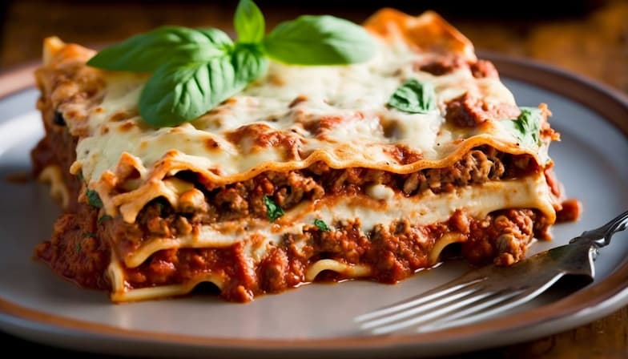

Lasagna Recipe

Description:
This classic lasagna recipe is the perfect comfort food for a family dinner or special occasion. Layers of tender
lasagna noodles are filled with a rich and hearty meat sauce, tangy ricotta cheese, and melted mozzarella cheese,
creating an irresistible dish that everyone will love. The dish is baked in the oven until the cheese is golden and
bubbly, resulting in a warm, cheesy, and delicious meal. Whether you're an experienced cook or just starting out in
the kitchen, this lasagna recipe is easy to follow and sure to be a crowd-pleaser.
Ingredients
- 1 pound ground beef
- 1 onion, chopped
- 4 cloves garlic, minced
- 2 (28 oz) cans of crushed tomatoes
- 2 (6 oz) cans of tomato paste
- 2 tablespoons dried basil leaves
- 1 teaspoon dried oregano
- 1 teaspoon salt
- 1/2 teaspoon black pepper
- 1/2 teaspoon sugar
- 12 lasagna noodles
- 15 oz ricotta cheese
- 1 egg
- 1/2 cup grated parmesan cheese
- 4 cups shredded mozzarella cheese
Steps
-
Preheat oven to 375°F (190°C).
-
In a large saucepan, cook the ground beef, onion, and garlic over medium heat until beef is browned. Drain any
excess fat.
-
Stir in the crushed tomatoes, tomato paste, basil, oregano, salt, pepper, and sugar. Bring to a boil, then
reduce heat and let simmer for about 30 minutes.
-
Cook lasagna noodles according to package directions. Drain and rinse with cold water.
-
In a separate bowl, mix together the ricotta cheese, egg, and parmesan cheese.
-
Spread a thin layer of meat sauce in the bottom of a 9x13 inch baking dish. Place 3 cooked lasagna noodles on
top of the sauce. Spread 1/3 of the ricotta mixture over the noodles, then sprinkle with 1 cup of mozzarella
cheese. Repeat layering two more times, ending with a layer of meat sauce and a layer of mozzarella cheese on top.
-
Cover with foil and bake for 25 minutes. Remove foil and bake for an additional 25 minutes, or until cheese is
golden and bubbly.
- Let cool for 10 minutes before slicing and serving. Enjoy!
Back to Recipes